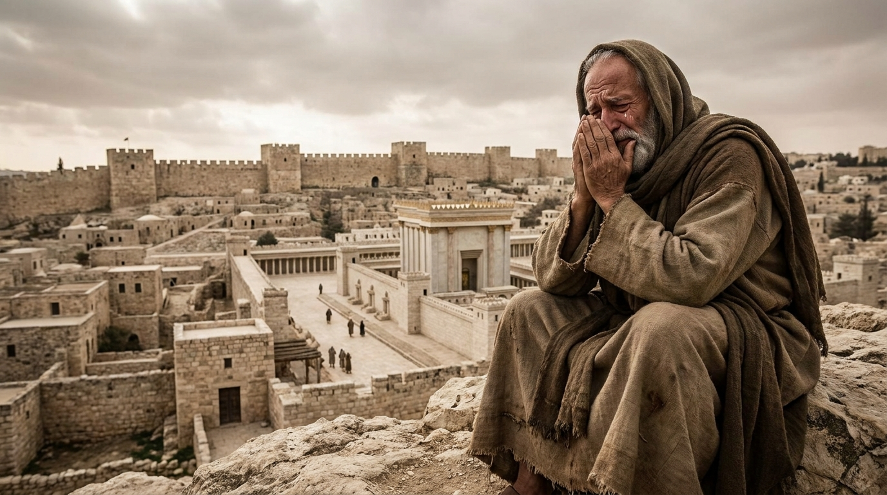

O Luto e a Esperança nas Ruínas
O livro de Lamentações é uma coleção de cinco poemas fúnebres intensamente emocionais. Ele descreve a dor dilacerante, a fome e a humilhação do povo de Judá após a brutal destruição de Jerusalém pelo Império Babilônico. O autor reconhece que o sofrimento é consequência do justo julgamento de Deus sobre o pecado, mas, bem no centro do livro, em meio ao mais profundo desespero, ele declara uma esperança inabalável na misericórdia de Deus que se renova a cada manhã.
Ficha Técnica
- Autor: Anônimo, mas a forte tradição judaica e cristã o atribui ao profeta Jeremias.
- Tema Principal: Luto pela queda de Jerusalém, o peso do julgamento divino e a fidelidade inesgotável de Deus.
- Versículo-Chave: "Graças ao grande amor do Senhor é que não somos consumidos, pois as suas misericórdias são inesgotáveis. Renovam-se cada manhã; grande é a tua fidelidade!" (Lamentações 3:22-23)
Estrutura
Os capítulos são cinco poemas distintos, a maioria estruturada como acrósticos no alfabeto hebraico:
- O luto de Jerusalém, como uma viúva solitária (Cap. 1)
- A justa ira de Deus contra o pecado da cidade (Cap. 2)
- A angústia pessoal do profeta e o brilho da esperança e misericórdia (Cap. 3)
- O terrível contraste: o passado glorioso e o presente em ruínas (Cap. 4)
- Uma oração final por misericórdia e restauração (Cap. 5)